Exploratory Analysis of Transportation Expenditure in Spain
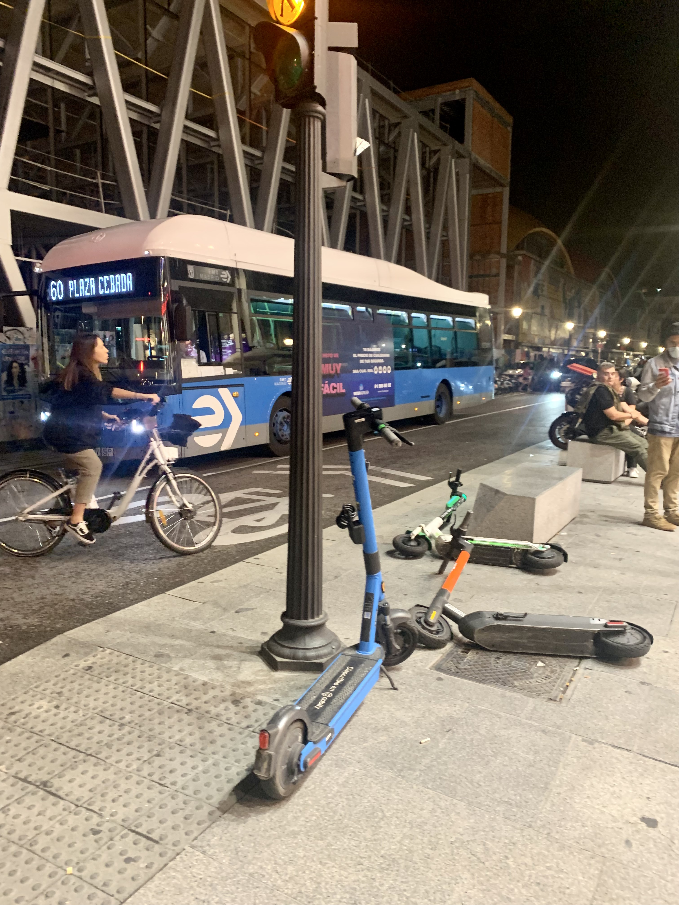
Introduction
Ridesharing, ridehailing, car leasing, carsharing, kickscooters, electric vehicles, and autonomous vehicles:
mobility has been one of the fastest-growing sectors in recent years.
This trend will remain accurate in the following years, with the increasing trend of companies offering mobility-as-a-service solutions,
robotaxis testing in the USA and China, electric air taxis becoming closer to reality, and so on [1-3].
Cities worldwide have been flooded with docked and non-docked scooters, bikes, and motorbikes (personal mobility vehicles).
Also, many companies like ShareNow, astara Move, car2share, Turo, and more, allow us to grab a car on the go and drop it after
(carsharing). Additionally, ridehailing companies like Uber, Lyft, Cabify, and DiDi came to ease door-to-door trips.

With all the possibilities offered by these new (and not so new) ways of moving around,
I cannot help but wonder, are these trends allowing us to spend less? Are we moving more?
Household expenditures are experiencing substantial increases during the last few years [4].
Moreover, transportation spending is commonly the second largest after housing expenditures [5].
This means we should try to move as efficiently as possible because this would help us save some cash.
Research says that Mobility services could help decrease car-ownership dependence [6], and since private cars account
for most of the transportation expenditures, reducing car usage could help us save more [7].
Are shared mobility services helping us reduce our car usage?
Are these new mobility systems helping us decrease our annual spending?
In my case, I started using every new ridehailing company around (Uber, Cabify, Bolt, Lyft, etc.) because the rides were
sometimes cheaper than traditional taxis. Still, if they did not exist, most likely, I would have used public transportation
instead (which is more affordable, and I do not own a car :D). Replacing public transportation with ridehailing is true for me,
but these services replace private car trips for some folks. Moreover, some people use kickscooters to places they used
to walk before; others use them for trips they would have done using a motorbike. For instance,
I have carpooled to Barcelona, and these trips have replaced very cheap (and long) bus rides but also have
replaced expensive high-velocity trains. Being all these statements anecdotal evidence,
I decided to use data to answer these questions for Spain, the country I currently live in.
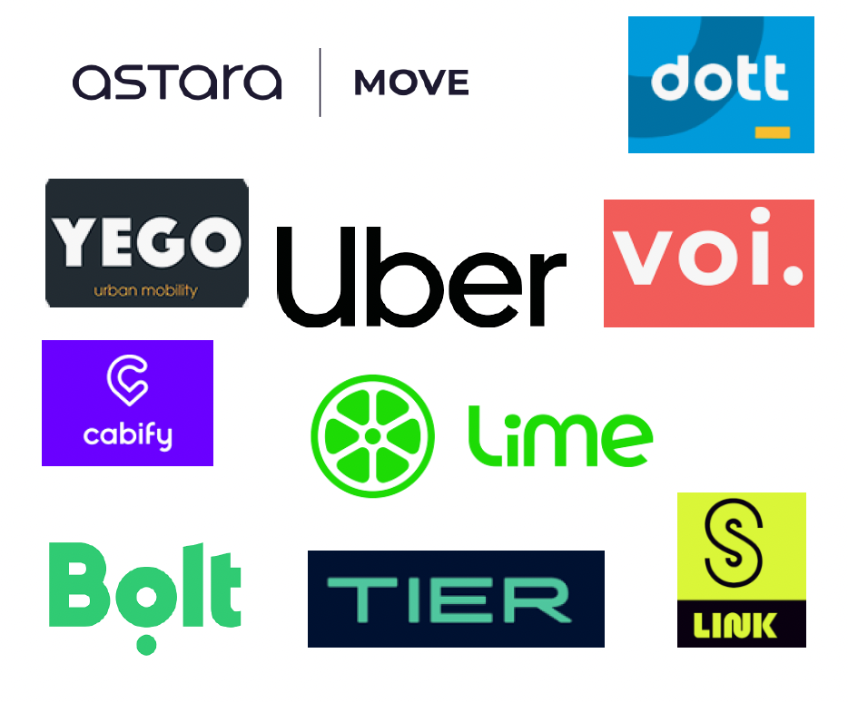
I used the Household Budget Survey (HSB) carried out by Spain's National Statistics Institute (INE) to explore household
spending on transportation [8]. The survey's main objective is to estimate Spanish families' annual consumption expenditure
within a natural year. This survey is carried out annually with a sample size of approximately 24,000 households,
later expanded to represent the entire Spanish population (≈ 18 million families).
After examining the information provided by the survey, my doubts also included how much people spent on more
traditional means of transportation (private cars and public transportation). The analysis went like this:
1. Are we spending less on transportation lately?
How have our transportation expenditures changed in the last five years?
Firstly, I calculated the total national household transportation expenditures from 2018-2022. I included expenses related
to all types of short-distance collective and individual mobility (metro, bus, local trains, fuel, shared mobility,
car purchases, personal mobility vehicle purchases, driving licenses, spare parts, parking, etc.).
Results show that our transportation expenses were on the rise
before COVID-19, dropped in 2020, and are now rising again. 2019 and 2022 show the highest numbers, with 67 and
68 thousand million euros, respectively.
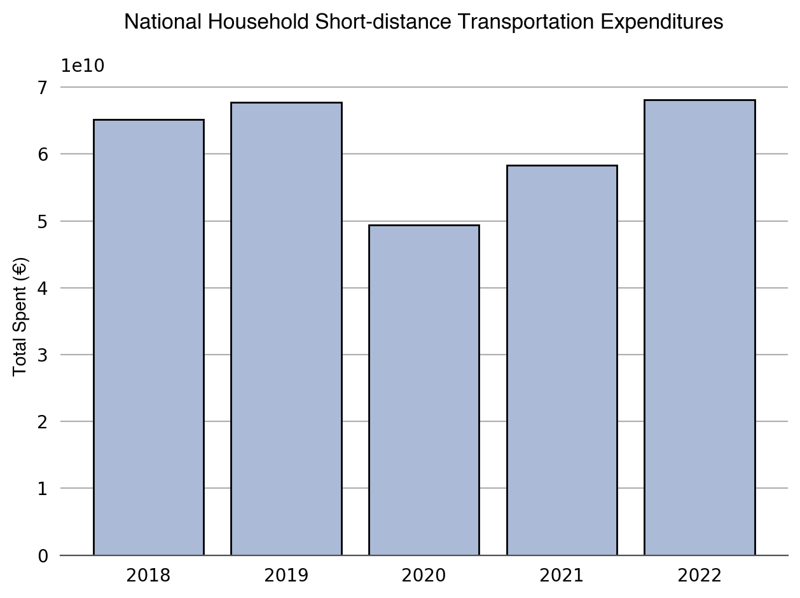
After that, I obtained the median percentage of total national household expenditures allocated to transportation. This median indicates what share of our total spending goes to transportation. These percentages tell a different story before COVID-19. In 2018 9.54 % of all our expenses were dedicated to local transportation, then in 2019, they went down to 9.37%, then to 7.30% in 2020, and rose to 8.52% in 2021. Last year this percentage had a 1.34% increase, surpassing its pre-pandemic values.
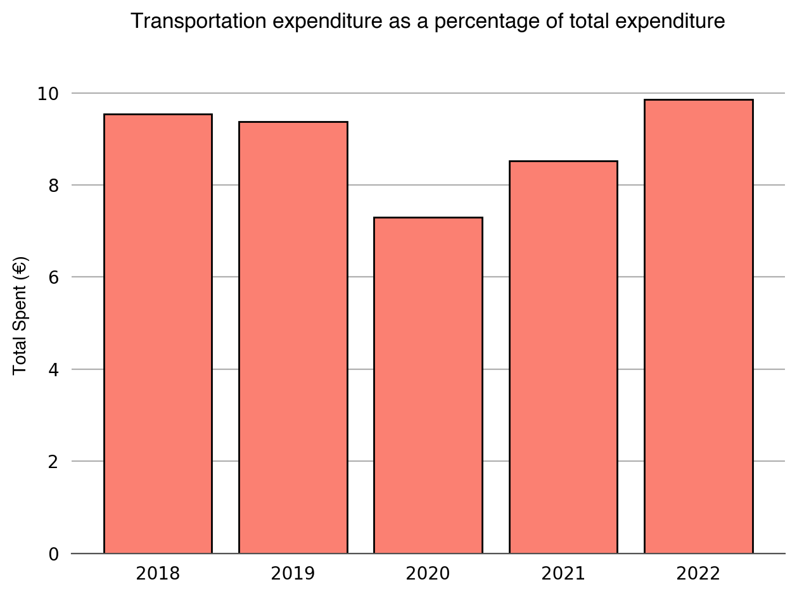
2. Are we spending more on private cars (purchase and use)?
As mentioned earlier, personal vehicles usually account for most transportation expenditures [7].
The total amount includes purchase, usage, and maintenance expenses. These expenditures were contained in several survey variables
that were analyzed separately.
First, the analysis of car purchases (old and new) evidenced the same movements as the overall transportation graph:
rising tendencies prior to and after COVID-19. The story changes when it comes to households that reside in bigger cities.
The graph below shows expenditures for the most populated cities in Spain. Before COVID-19, the rise is like the first plot,
but after 2021 it starts to decrease.
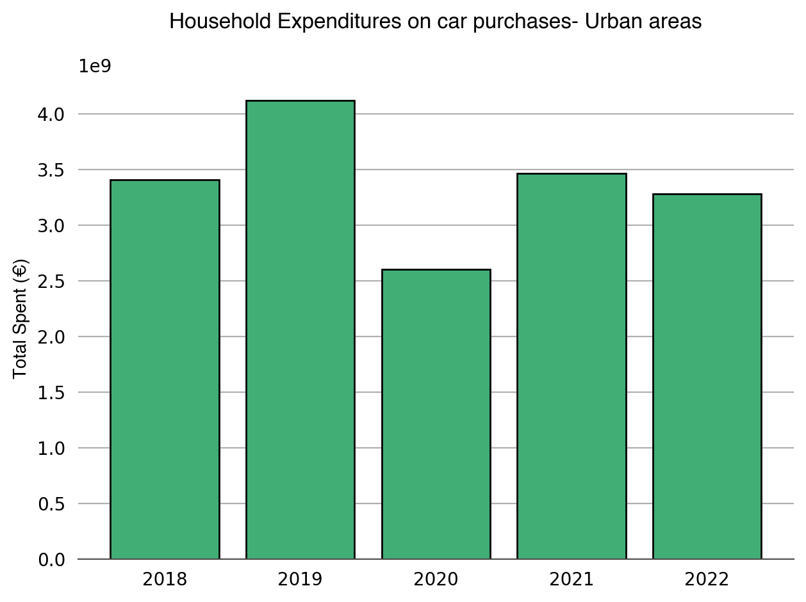
Whereas national car purchases have been rising since 2020, not reaching yet 2018 or 2019 values, more populated urban centers in 2022 reported fewer outflows than in 2021. The difference between 2021 and 2022 is almost 187 million euros.
The second set of variables analyzed were those related to fuel and electricity (used by electric or hybrid cars). Expenditures on traditional fuels (diesel and gasoline) are similar to the first chart, with rising tendencies before and after COVID-19 but, in this case, not reaching pre-pandemic figures. On the contrary, alternative fuels (hydrogen, biodiesel, electricity, etc.) met their highest expenditure year in 2022, as shown in the plot below.
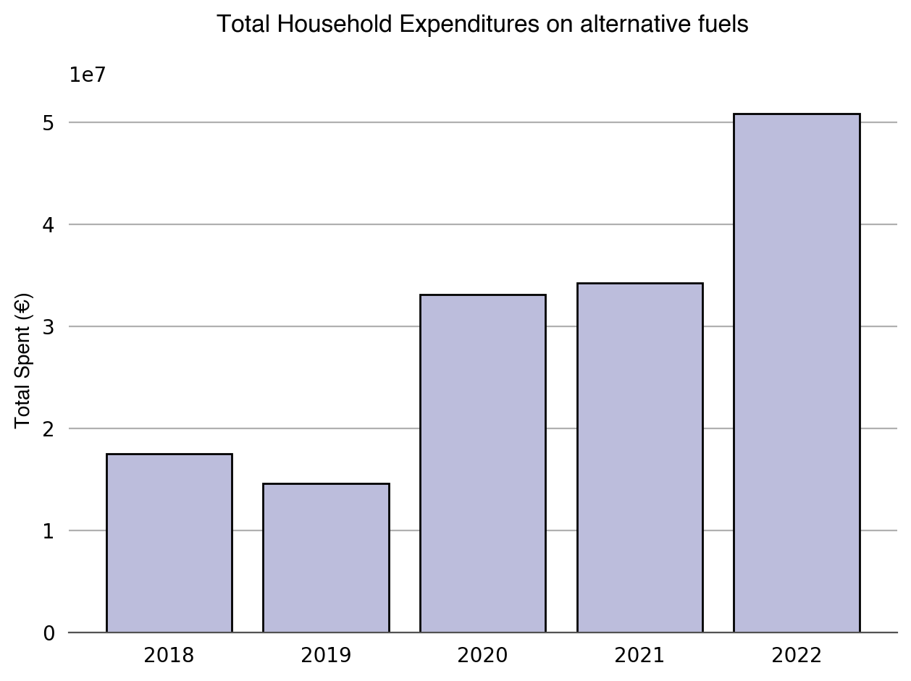
The following chart shows one last attempt to understand the changes in private car expenditures.
This time I examine the relationship between private-car expenses and income.
The plot below was made for each year of 2018-2022, and the results were similar. This one corresponds to 2022;
it shows the monthly income in the x-axis, and the y-axis shows monthly purchase, fuel, insurance, and maintenance car expenditures.
The red vertical line indicates the income median for Spain (2300 €). The horizontal red line shows the percentage of
the salary usually destined for transportation according to research (15%) [9-10]. Fortunately,
households with a share spent on private-car expenditures higher than 15% and lower
income do not constitute the majority of the sample (represented in light blue);
the majority are those with lower income and lower expenses (in orange).
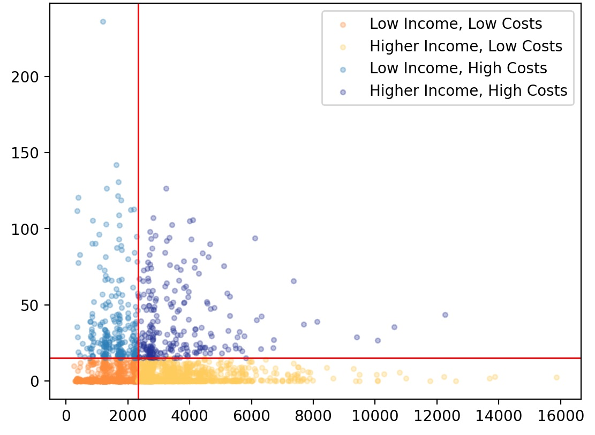
3. Is the use of Personal Mobility Vehicles (kickscooters, bikes, etc.) rising?
I was surprised by the chart below. Personal mobility vehicles (scooters, bikes, electric bikes, etc.) were the only expenditure that did not have their lowest value in 2020. As shown, the amount reached in 2020 was lower when compared to 2019 but not when compared to 2018.
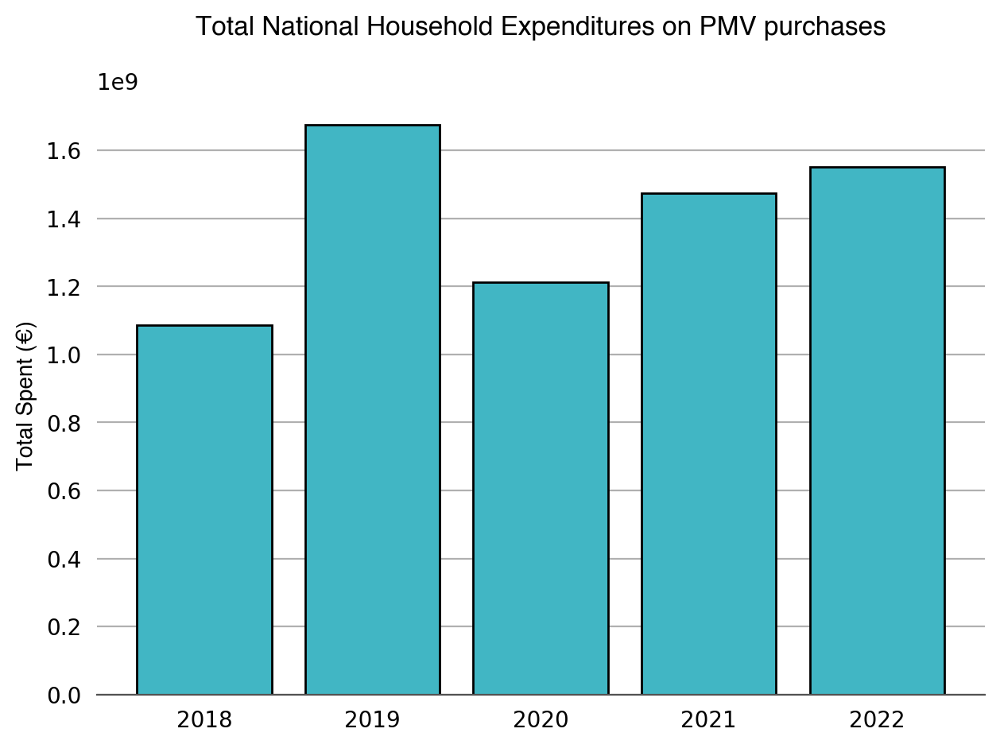
4. Are we spending more on public transportation?
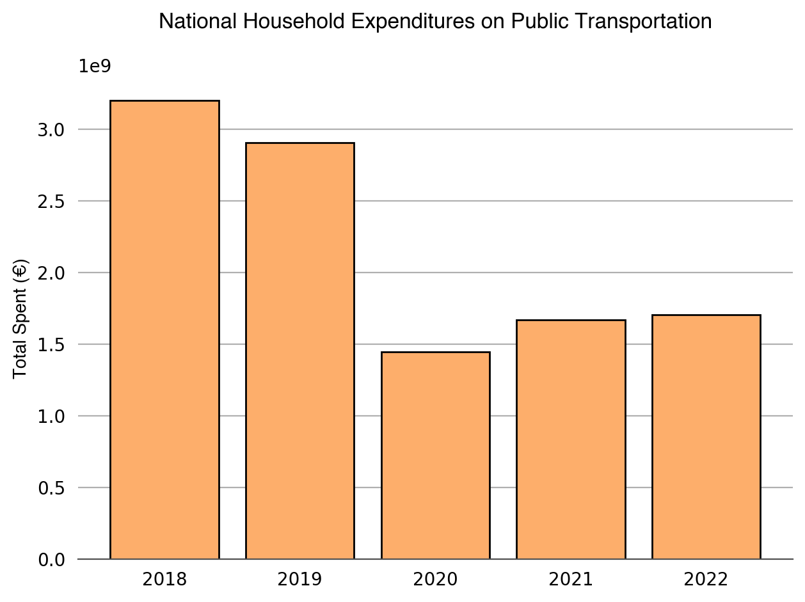
Yes, but not really. The following chart shows that we have been increasing our expenditure on public transportation services since 2020. Before that year, these expenditures were going down. Additionally, we have not spent as much as we did back in 2019. It is essential to mention that Spain, like many European countries, has increased their subsidies to public transportation, dropping ticket prices by 50% in some cities like Madrid.
5. Are new mobility trends allowing us to spend less?
Shared mobility maps allow us to locate mobility operators worldwide. The map below is from NUMO (New Urban Mobility Alliance).
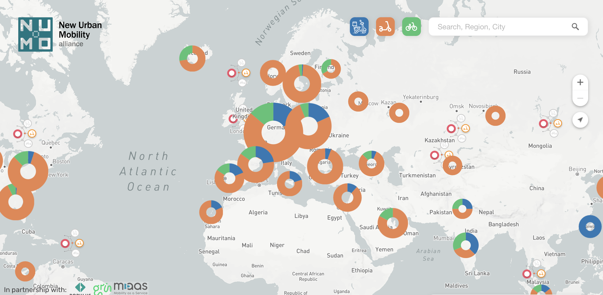
First, I checked the expenditures in shared mobility in the last five years. The plot does not show a consistent trend. In 2018 the expenses reached their maximum, decreased in 2019, and kept going down in 2020. In 2021 expenditures went up and down again in 2022.
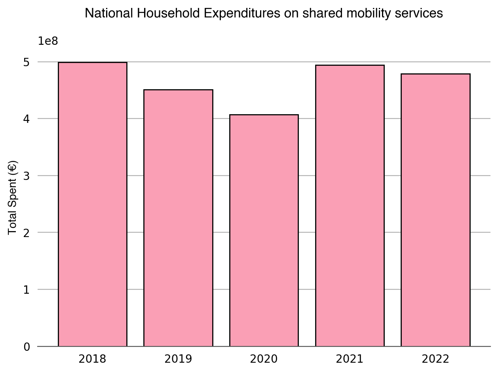
For the following exploration, I separated households that own a car and those that do not. The segmentation aimed to see if shared mobility is progressively replacing these families' traditional transportation means. This 'replacement' would be taking place if there were evidence of decreased expenditures on traditional transportation and increased expenses on shared mobility services over the last years.
For those households with a car, the substitution would be evidenced by fewer fuel expenditures, and those that do not owe a car by less public transportation expenditure. This exploration is very superficial because being certain would require more data, but this could be an excellent initial approximation. The plot shows that, compared to fuel spending, shared mobility has a long way to go.
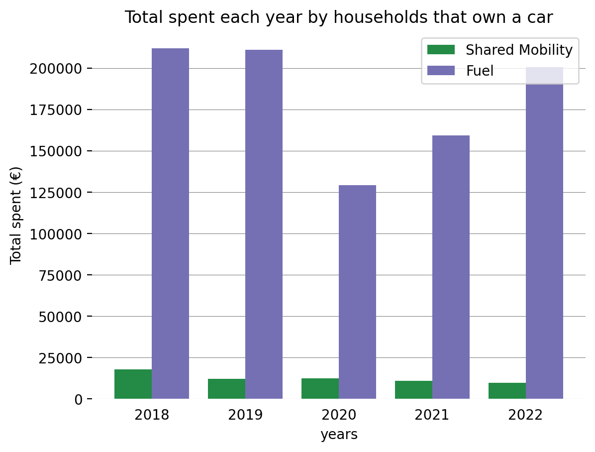
Houses that do not own a car show this 'replacement' trend mentioned above. As shown in the following plot, their expenditures on public transportation were decreasing even before COVID-19, and shared mobility expenses are increasing. Unfortunately, as public transportation is the cheapest option, this trend will not likely reduce our costs.
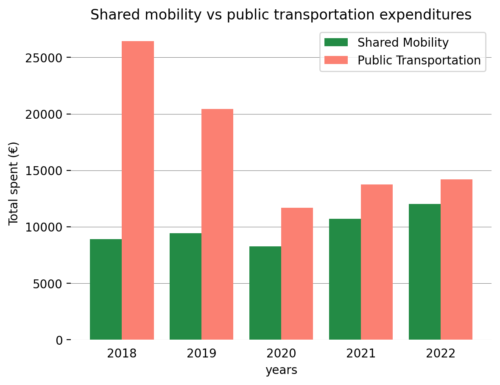
An additional plot showed that from 2018 to 2020, families that owned a car spent more on shared mobility. In 2021 and 2022, this changed.
6. Are we moving more?
Finally, the question that motivated the whole analysis. With the data at hand, the only way to infer if we are moving
more is by using the fuel expenditure and fuel prices to see if we are traveling more kilometers.
Monthly fuel prices for Spain were obtained from the Spanish economic and business newspaper 'Expansión' [11].
These were used to calculate the liters acquired and, from there,
kilometers traveled (considering the use of 6-liter tanks).
The plot shows that even though we are spending more on fuel after 2020 (red line), our kilometers traveled are not increasing
(blue line). These incremented expenditures are directly related to the rising petrol prices during the last few years.
From 2018 to 2020, these lines showed similar trends and magnitudes, changed magnitudes after 2020, and now showing
differences in both. Fuel expenditure keeps growing, and kilometers traveled are decreasing.
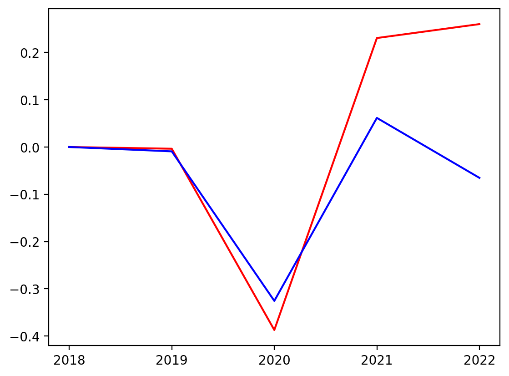
Unfortunately, those families spending more on fuel are also spending more on shared mobility, and up to 2021, they were also spending more on public transportation.
Conclusions
This exploration shows that, for now, shared mobility services are being used in addition to traditional transportation. They are an extra expense that we have included in our transportation expenditures. Moreover, the data does not prove they are helping us save. The code used to run the analysis can be found here.
References
- https://www.scmp.com/business/china-business/article/3213930/robotaxis-beijing-chinas-baidu-wins-approval-offer-driverless-cab-service-yizhuang-economic
- https://www.nytimes.com/2023/08/10/technology/driverless-cars-san-francisco.html
- https://www.euronews.com/next/2022/10/13/xpengs-new-electric-air-taxi-can-whisk-you-over-traffic-jams-at-up-to-130-kmh
- https://www.ons.gov.uk/peoplepopulationandcommunity/personalandhouseholdfinances/expenditure/articles/ impactofincreasedcostoflivingonadultsacrossgreatbritain/junetoseptember2022
- https://data.bts.gov/stories/s/Transportation-Economic-Trends-Transportation-Spen/ida7-k95k/
- Storme, T., Casier, C., Azadi, H., & Witlox, F. (2021). Impact assessments of new mobility services: A critical review. Sustainability, 13(6), 3074.
- https://www.bts.dot.gov/sites/bts.dot.gov/files/docs/browse-statistical-products-and-data/transportation-economic-trends/224726/tet-2018-chapter-6.pdf
- Ausubel, J. H., Marchetti, C., & Meyer, P. S. (1998). Toward green mobility: the evolution of transport. European Review, 6(2), 137-156.
- Li, T., Dodson, J., & Sipe, N. (2015). Differentiating metropolitan transport disadvantage by mode: Household expenditure on private vehicle fuel and public transport fares in Brisbane, Australia. Journal of transport geography, 49, 16-25.
- https://datosmacro.expansion.com/energia/precios-gasolina-diesel-calefaccion/espana?anio=2022